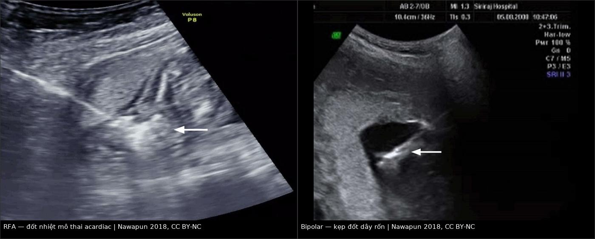
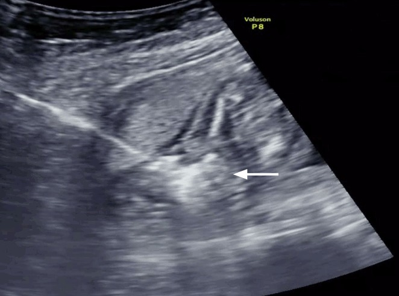
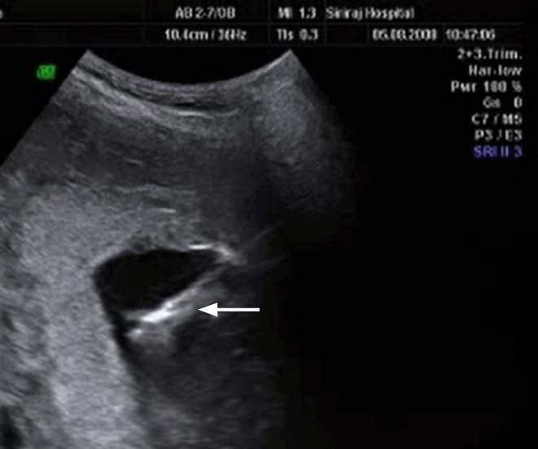

1638 — Giảm thai chọn lọc ở song thai một bánh nhau: RFA và bipolar cord coagulation / Selective fetal reduction in monochorionic twins: radiofrequency ablation and bipolar cord coagulation
Tags: pattern:giam-thai-chon-loc pattern:ttts pattern:sfgr pattern:trap pattern:thai-luu vung:thai-nhi vung:banh-nhau score:Quintero score:Gratacos protocol:SA-Doppler protocol:RFA protocol:bipolar-cord-coagulation incidentaloma:khong
Mức chắc chắn (certainty): tổng hợp y văn (literature synthesis) — đoàn hệ 306 ca RFA (Li N et al., BMC Pregnancy Childbirth 2021, PMC8662893), 100 ca RFA (Sharma KA et al., Obstet Gynecol Sci 2025, PMC12463477), 56 ca bipolar cord coagulation (Weber EC et al., J Clin Med 2022, PMC8950483) và hướng dẫn ISUOG 2025 (Khalil A et al., PMC11788470). Số liệu là của các nghiên cứu được trích, không phải ca nguyên văn của nhóm.
Câu chốt của bài: trong song thai một bánh nhau (monochorionic — MC), hai thai chia chung tuần hoàn bánh nhau, nên cái chết tự phát của một thai có thể rút máu cấp thai còn lại: 14% thai còn lại chết, 21% có tổn thương thần kinh trên hình ảnh, và 77% sinh non < 37 tuần. Vì vậy khi một thai không thể cứu (TTTS nặng, TRAP, sFGR độ II–III, dị tật nặng không tương hợp), chủ động cắt tuần hoàn của thai bệnh — bằng đốt nhiệt qua da (RFA) hoặc kẹp–đốt dây rốn qua nội soi (bipolar cord coagulation) — bảo vệ thai còn lại, với sống sót 79–88% và PPROM 12–18%. Điều tuyệt đối không làm: dùng KCl nội tim cho thai trong MC, vì KCl qua tuần hoàn chung giết cả thai lành.
1. Tổng quan bệnh học – cơ chế hình ảnh
- Vì sao MC khác hẳn song thai hai bánh nhau: một bánh nhau duy nhất với nối mạch (vascular anastomoses) động–động, tĩnh–tĩnh và động–tĩnh. Khi một thai chết, huyết áp thai chết tụt về 0 → thai còn lại bơm máu sang "xác" thai qua nối động–động (exsanguination) → tụt huyết áp cấp, thiếu máu–thiếu tưới máu não, chết hoặc tổn thương chất trắng. Đây là lý do can thiệp chủ động thay vì "chờ thai chết tự nhiên".
- Ngưỡng định lượng của cái chết tự phát (TẠI SAO phải can thiệp): trong 81 ca MC có một thai chết sau 14 tuần (UKOSS, Morris 2020): thai còn lại chết 14% (10/70); sinh non < 37 tuần 77%; 21% (7/33) có bất thường trên MRI thai, thêm 7 ca bất thường chỉ phát hiện sau sinh; 6% mẹ vào ICU (đều do nhiễm trùng).
- Vì sao RFA và bipolar "cắt" được tuần hoàn: cả hai tạo hoại tử đông (coagulation necrosis) mô đích.
- RFA (radiofrequency ablation — đốt bằng sóng cao tần): kim 17 gauge, dài 15 cm, 8 tine bung tạo khối cầu đốt tối đa ~2 cm; công suất 20–40 W đưa nhiệt độ mô lên 100–110 °C, giữ 2 phút/lần, lặp 1–2 lần cho tới khi tim thai ngừng và Doppler mất dòng dây rốn. Ưu điểm: qua da, không cần nội soi, làm được khi thiểu ối, dây rốn khó tiếp cận, thai nhỏ.
- Bipolar cord coagulation (kẹp–đốt dây rốn qua nội soi): đưa kẹp bipolar qua trocar 11 Fr, kẹp dây rốn và đốt cho tới khi mất dòng, sau đó (thai monoamniotic) cắt dây để tránh quấn. Ưu điểm: cắt đúng dây rốn, kiểm soát trực tiếp; nhược điểm: cần nội soi, cần cửa sổ dây rốn, khó khi thiểu ối nặng.
- Vì sao phải xác nhận bằng Doppler chứ không chỉ "tim ngừng": mạch có thể tái thông sau đốt non; tiêu chuẩn kỹ thuật là mất dòng dây rốn hoàn toàn trên color/pulsed Doppler, không chỉ asystole thoáng qua.
- Ngưỡng định lượng kết cục:
- RFA: 100 ca — sinh sống 85%, sống tới xuất viện 79%, PPROM 18%, thai chết 15% (chủ yếu TTTS), tổn thương não trên MRI 2% (Sharma 2025). 306 ca — sống sót 78,76%, mất thai còn lại 20,9% (< 20 tuần) vs 21,5% (> 20 tuần) (p > 0,05), PPROM < 24 giờ 1,5% vs 1,2%, tuổi thai sinh 35,9 vs 36,0 tuần (Li 2021). 54 ca — sống 83,3%; theo chỉ định TTTS 66,7% · sFGR 93,3% · TRAP 80% (Pan 2022).
- Bipolar cord coagulation: 56 ca — sống 87,5%, PPROM 12,5% trước 32 tuần (+ 7,1% ở 34–36 tuần), thai lưu 8,9% (trung vị 2 tuần sau thủ thuật), sinh non < 32 tuần 21,4%, tử vong sơ sinh 3,6%, tuổi thai sinh trung bình 37,1 tuần (Weber 2022).
- So sánh gộp: phân tích gộp 17 nghiên cứu (481 BCC, 320 RFA) — sống 76,8% (RFA) vs 79,1% (BCC); một phân tích khác — 86% (RFA) vs 82% (BCC) vs 72% (laser). Hai con số không mâu thuẫn mà phản ánh khác biệt chỉ định và tuổi thai; không có RCT chứng minh một phương pháp trội hơn.
- ISUOG 2025: ở MC, giảm thai chọn lọc bằng cord occlusion, intrafetal laser, microwave hoặc RFA, thực hiện từ 16 tuần, sống sót > 80%; với dị tật không tương hợp, theo dõi chờ 88,5% sống sót vs can thiệp 82,7% (p = 0,87) — không phải mọi ca đều phải can thiệp.
2. Mẫu hình + chẩn đoán phân biệt theo bối cảnh (Gamut)
- Khuôn 1 — TTTS (twin–twin transfusion syndrome): Quintero I–V dựa trên DVP ≤ 2 cm ở thai cho + ≥ 8 cm (< 20 tuần) hoặc ≥ 10 cm (≥ 20 tuần) ở thai nhận + bàng quang. Laser đốt nối mạch là điều trị chuẩn; giảm thai chỉ khi một thai không thể cứu (hydrops nặng, phù, không có bàng quang kéo dài, tổn thương não) hoặc laser thất bại/tái phát không còn khả năng cứu.
- Khuôn 2 — sFGR (selective fetal growth restriction): Gratacos I (Doppler động mạch rốn bình thường, tiến triển 16%), II (mất/đảo dòng cuối tâm trương, tiến triển 59%), III (mất/đảo dòng từng lúc, tiến triển 10%). Loại II là nhóm tiên lượng xấu nhất, nơi phải cân nhắc giảm thai khi thai nhỏ sắp chết và đe dọa thai lành.
- Khuôn 3 — TRAP (twin reversed arterial perfusion): 2,6% các ca MC, tần suất 1/9.500–11.000; thai acardiac được nuôi ngược dòng bởi thai bơm (pump twin); tử vong thai bơm 85% nếu không điều trị do suy tim cung lượng cao, phù, đa ối. Điều trị: RFA hoặc intrafetal laser cắt tuần hoàn thai acardiac — không dùng KCl.
- Khuôn 4 — dị tật nặng không tương hợp / đa thai bậc cao: giảm thai chọn lọc để cứu thai lành; với ba thai MC có thể giảm về song thai (MFPR).
- Khuôn 5 — thai monoamniotic (MCMA): quấn dây rốn 55–100%; khi giảm thai phải kẹp–đốt VÀ cắt dây rốn để tránh dây của thai chết quấn thai sống.
- Mnemonic "STOP": Select the unsalvageable twin (chọn đúng thai bệnh) — Technique theo cửa vào dây rốn (RFA qua da vs bipolar nội soi) — Occlude until no flow (không chỉ asystole) — Protect the co-twin (MCA-PSV 24 giờ, MRI não quý III, theo dõi sinh non).
3. Bảng so sánh phân biệt (ma trận đối chiếu)
| Phương thức (entity) | Kỹ thuật / hình ảnh điển hình | Chốt vào (rule-in) | Chốt loại (rule-out) | Gợi ý xác nhận |
|---|---|---|---|---|
| RFA qua da (radiofrequency ablation) | Kim 17 G, 8 tine, khối đốt ~2 cm, 20–40 W, 100–110 °C, 2 phút/lần × 1–2 lần | Thai đích nhỏ/thiểu ối/dây rốn khó tiếp cận; cần qua da, không nội soi; mất dòng dây rốn sau đốt | Thai quá lớn (> 26–28 tuần) hoặc acardiac khổng lồ → khó đủ khối đốt, cân nhắc BCC | Doppler màu + xung xác nhận mất dòng; MCA-PSV thai còn lại sau 24 giờ |
| Bipolar cord coagulation | Nội soi qua trocar 11 Fr, kẹp bipolar kẹp dây rốn, đốt tới mất dòng; MCMA thì cắt dây | Có cửa sổ dây rốn, đủ ối để nội soi; cần cắt dây (monoamniotic) | Thiểu ối nặng, dây rốn sau nhau, thai < 16 tuần → khó; chọn RFA | Nội soi thấy dây rốn + Doppler mất dòng; kiểm tra không còn mạch |
| Intrafetal laser | Kim 18 G + sợi laser 400 µm đốt động mạch rốn trong thai (thường TRAP) | TRAP/thai nhỏ, cần đốt gọn trong thai; ít xâm lấn | Thai lớn, cần cắt cả dây → RFA/BCC | Doppler mất dòng động mạch rốn thai đích |
| Microwave ablation (MWA) | Đốt vi sóng qua kim, 100–200 W, 3–6 phút | Cùng chỉ định RFA, khi có thiết bị | Dữ liệu còn nhỏ (21 ca), chưa có RCT → không mặc định thay RFA | Doppler mất dòng; theo dõi như RFA |
| KCl nội tim | Tiêm KCl vào tim thai | CHỈ dùng song thai HAI bánh nhau (dichorionic) | TUYỆT ĐỐI KHÔNG dùng trong MC — KCl qua nối mạch gây chết thai lành | Không áp dụng cho MC |
| Theo dõi chờ (expectant) | Siêu âm/Doppler định kỳ | Dị tật không tương hợp, thai còn ổn; sống sót 88,5% (ISUOG) | TTTS nặng/TRAP có suy tim thai bơm → chờ làm tăng tử vong | MRI não, Doppler, đánh giá suy tim thai |

Trái: RFA — đầu kim và vùng đốt tăng âm hình cầu (mũi tên) trong thai acardiac; nhiệt 100–110 °C làm đông mô, Doppler sau đó mất dòng. Phải: bipolar — kẹp đốt dây rốn (mũi tên) qua nội soi; với thai monoamniotic phải cắt dây sau đốt. Nguồn: Nawapun K et al., Ultrasonography 2018 (PMC6044223), Fig. 15 và Fig. 13, CC BY-NC; ảnh ghép letterbox giữ tỷ lệ gốc.4. Protocol chụp + hệ phân độ/điểm chuẩn hóa
- Trước thủ thuật (bắt buộc):
- Xác định bản thể (chorionicity): dấu lambda = hai bánh nhau; T sign = một bánh nhau; không vách = monoamniotic. Sai bản thể = sai phương pháp (KCl vs RFA/BCC).
- Chẩn đoán và phân độ: Quintero cho TTTS; Gratacos cho sFGR; đo DVP, bàng quang, Doppler động mạch rốn/ductus venosus, MCA-PSV, đánh giá suy tim thai bơm (cardiomegaly, TR, hydrops) trong TRAP.
- Siêu âm tim thai hai thai; MRI não thai khi nghi tổn thương (không bắt buộc thường quy).
- Tư vấn: nêu rõ sống sót 79–88%, PPROM 12–18%, sinh non, nguy cơ tổn thương não thai còn lại, và phương án chờ nếu phù hợp.
- Kỹ thuật:
- RFA: gây tê tại chỗ + an thần; kim 17 G/15 cm, 8 tine vào thân thai đích dưới chỗ bám dây rốn, bảo đảm tất cả tine trong thân thai (tránh đốt màng ối/thành tử cung); 20–40 W tới 100–110 °C, 2 phút/lần, lặp tới asystole + mất dòng dây rốn; rút tine trước khi rút kim.
- BCC: trocar 11 Fr, kẹp bipolar kẹp dây rốn, đốt tới mất dòng; MCMA: cắt dây sau đốt. Bơm NaCl ấm nếu thiểu ối để có cửa sổ.
- Dự phòng: kháng sinh 1 liều (cefazolin 1 g), tránh septostomy không cần thiết.
- Sau thủ thuật:
- MCA-PSV thai còn lại trong 24 giờ (phát hiện thiếu máu cấp do rỉ máu lúc cắt); siêu âm 1 tuần, sau đó mỗi 2 tuần: sinh trắc, Doppler rốn, ductus venosus, MCA-PSV.
- MRI não thai còn lại quý III (không thường quy nhưng nên làm khi có bất thường Doppler/MCA); theo dõi thần kinh sau sinh (xem bài 1636).
- Theo dõi sinh non: đo cổ tử cung, giáo dục dấu hiệu chuyển dạ, cân nhắc corticoid nếu < 34 tuần; PPROM xử trí như bài 1635.
- Sơ đồ quyết định:
flowchart TD
A[Song thai một bánh nhau + một thai bệnh] --> B{Thai bệnh còn cứu được?}
B -->|Có| C[Điều trị theo bệnh: laser TTTS, theo dõi sFGR, laser/RFA TRAP]
B -->|Không| D{Có cửa sổ dây rốn + đủ ối để nội soi?}
D -->|Có| E[Bipolar cord coagulation; MCMA thì cắt dây]
D -->|Không| F[RFA qua da 17G, 20-40W, 100-110 độ C]
E --> G[Xác nhận mất dòng dây rốn bằng Doppler]
F --> G
G --> H[MCA-PSV 24 giờ + siêu âm 2 tuần/lần + MRI não quý III]
5. Biến thể bình thường và cạm bẫy
- Cạm bẫy 1 — dùng KCl cho MC: KCl qua tuần hoàn bánh nhau chung có thể vào thai lành → chết cả hai. KCl chỉ dành cho song thai hai bánh nhau.
- Cạm bẫy 2 — "tim ngừng" không đồng nghĩa "mất tuần hoàn": phải xác nhận mất dòng dây rốn bằng color + pulsed Doppler; đốt non có thể tái thông.
- Cạm bẫy 3 — nhầm "giảm thai chọn lọc" với "giảm số thai (MFPR)": MFPR là giảm số lượng thai trong đa thai; giảm thai chọn lọc là chọn đúng thai bệnh dựa trên chẩn đoán — đánh số thai sai = giết thai lành; luôn ghi nhãn thai (A/B) và xác nhận lại trước khi đốt.
- Cạm bẫy 4 — bỏ sót thiếu máu thai còn lại: sau khi cắt tuần hoàn, thai lành có thể mất máu cấp qua nối mạch tồn dư; MCA-PSV > 1,5 MoM trong 24 giờ → cân nhắc truyền máu trong tử cung.
- Cạm bẫy 5 — trích "sống sót 80–90%" chung cho mọi chỉ định: TTTS sống 66,7%, sFGR 93,3%, TRAP 80% — tư vấn phải theo chỉ định, không theo con số gộp.
- Cạm bẫy 6 — quên tổn thương não muộn: MRI thai có thể bình thường sớm rồi bất thường muộn; 21% thai còn lại sau một thai chết tự phát có bất thường trên hình ảnh — cần MRI quý III + theo dõi phát triển.
- Cạm bẫy 7 — thai monoamniotic: nếu chỉ đốt mà không cắt dây, dây thai chết có thể quấn thai sống; phải kẹp–đốt + cắt.
- Cạm bẫy 8 — PPROM do thủ thuật bị quy cho "dọa sinh non": PPROM sau RFA 12–18%, thường liên quan đường vào/màng ối; phân biệt với nhiễm trùng và xử trí theo bài 1635.
6. Tự lượng giá — Blind Quiz
Ca 1 — Thai 20 tuần, MC, một thai acardiac (TRAP), thai bơm có tim to + đa ối. Siêu âm trong lúc thủ thuật.

- Gợi ý: thai bơm chưa phù, chức năng tim còn bù; siêu âm thấy đầu kim và vùng tăng âm hình cầu trong thai acardiac.
- Câu hỏi: (1) Đây là thủ thuật gì? (2) Cấu trúc mũi tên chỉ là gì? (3) Tiêu chuẩn nào xác nhận thành công? (4) Vì sao không dùng KCl?
Bấm để hiện đáp án (findings + chẩn đoán)
- Thủ thuật: RFA (radiofrequency ablation) qua da — kim 17 G, 8 tine, đốt mô thai acardiac ở 100–110 °C, 2 phút/lần.
- Mũi tên: vùng mô đông (coagulation) tăng âm hình cầu quanh đầu tine — hiệu ứng nhiệt đang diễn ra.
- Xác nhận thành công: mất dòng dây rốn/thân thai trên color + pulsed Doppler (không chỉ tim ngừng), sau đó theo dõi thai bơm.
- Không dùng KCl: trong MC, KCl qua nối mạch bánh nhau có thể gây chết thai bơm; với TRAP phải cắt tuần hoàn thai acardiac (RFA/intrafetal laser).
- Nguồn ảnh: Nawapun K et al., Ultrasonography 2018 (PMC6044223), Fig. 15, CC BY-NC.
Ca 2 — Thai 20 tuần, MC, sFGR độ II (mất dòng cuối tâm trương động mạch rốn ở thai nhỏ), thai nhỏ ước 180 g, có đủ ối. Nội soi thấy dây rốn.

- Câu hỏi: (1) Phương pháp nào phù hợp và vì sao? (2) Mũi tên chỉ gì? (3) Sau thủ thuật, xét nghiệm/hình ảnh nào phải làm trong 24 giờ?
Bấm để hiện đáp án
- Phương pháp: bipolar cord coagulation qua nội soi — có cửa sổ dây rốn và đủ ối; kẹp–đốt dây rốn tới mất dòng. Nếu thiểu ối nặng/không vào được dây → chuyển RFA qua da.
- Mũi tên: kẹp bipolar đang kẹp dây rốn trong buồng ối.
- 24 giờ sau: MCA-PSV của thai còn lại (thiếu máu cấp), siêu âm tim thai; sau đó siêu âm 2 tuần/lần, MRI não quý III, theo dõi sinh non.
- Vì sao không chờ: sFGR độ II tiến triển 59%, nguy cơ thai nhỏ chết đột ngột → rút máu thai lành; nhưng nếu thai còn ổn định và không có dấu hiệu suy, theo dõi chờ vẫn là lựa chọn (ISUOG: 88,5% sống ở nhóm dị tật không tương hợp).
- Nguồn ảnh: Nawapun K et al., Ultrasonography 2018 (PMC6044223), Fig. 13, CC BY-NC.
Bài liên quan chéo
- 1611 – TTTS tái phát sau laser: chẩn đoán lại, phân giai đoạn Delphi 2025 & laser lần 2
- 1637 – TAPS sau laser TTTS: MCA-PSV, phân độ 1–5 & khi nào truyền máu trong tử cung
- 1636 – Theo dõi thần kinh dài hạn sau một thai chết trong song thai một bánh nhau
- 1635 – Vỡ ối non tháng sau can thiệp bào thai: lỗ trocar, ống rò thành tử cung & xử trí
- 587 – Dự phòng sinh non sau laser TTTS
- 566 – Song thai: chorionicity, TTTS & TAPS
- 500 – Tổng quan Vú & Sản phụ khoa
Ảnh
images/1638_giam-thai_RFA-Sieu-am_PMC6044223-F15.jpg— RFA trong thai acardiac, Fig. 15, CC BY-NC.images/1638_giam-thai_Bipolar-Sieu-am_PMC6044223-F13.jpg— bipolar kẹp dây rốn, Fig. 13, CC BY-NC.images/composite_rfa-vs-bipolar.jpg— ảnh ghép letterbox từ hai ảnh trên, CC BY-NC (ghi nguồn).- Nguồn + giấy phép từng ảnh:
images/CREDITS.md.
Không dùng để chẩn đoán độc lập khi chưa có người hướng dẫn.